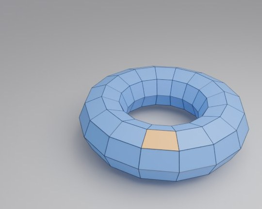
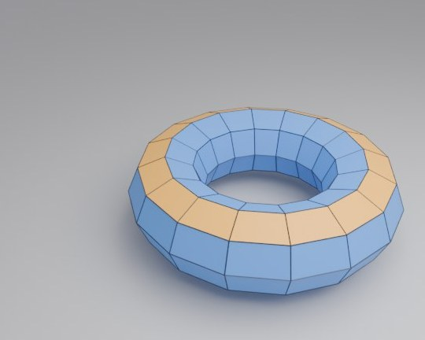

Bonus lesson
Select Loops
A loop is a line of edges or faces that runs end to end across a mesh. Select Loops picks the whole line with one click. It works in Edit Mode. The menu is Select › Select Loops.


Edge loops
In Vertex or Edge select mode, hold Alt and click an edge to select the loop of edges running end to end through it. Shift-Alt adds to the current selection. The manual notes that a loop can stop where it reaches a pole, a vertex that connects to more than four edges. A loop around a sphere's middle closes into a full loop instead.
Face loops
In Face select mode, Alt-click an edge to select the loop of faces that runs along opposite edges. In Vertex select mode, Ctrl-Alt-click an edge does the same, because selecting opposite edges of a face selects the whole face.
Edge rings
An edge ring is a set of edges that are not connected to each other, but sit on opposite sides of the faces in a loop. Use Ctrl-Alt-click, or Select › Select Loops › Edge Rings. The manual shows the same edge giving two different results: a loop follows edges, a ring follows faces.
Loop inner-region
Select › Select Loops › Select Loop Inner-Region selects all faces inside a closed loop of edges. The manual says it works best in Edge select mode. If the loop is not closed, every connected edge on the mesh counts as inside.
Read the manual page on Select Loops.
Try it
This exercise is our own suggestion and has not been run step by step in the GUI. Add a torus, enter Edit Mode and switch to Edge select mode. Alt-click an edge to select an edge loop. Then Ctrl-Alt-click an edge to see an edge ring. Use Ctrl+Z to undo.